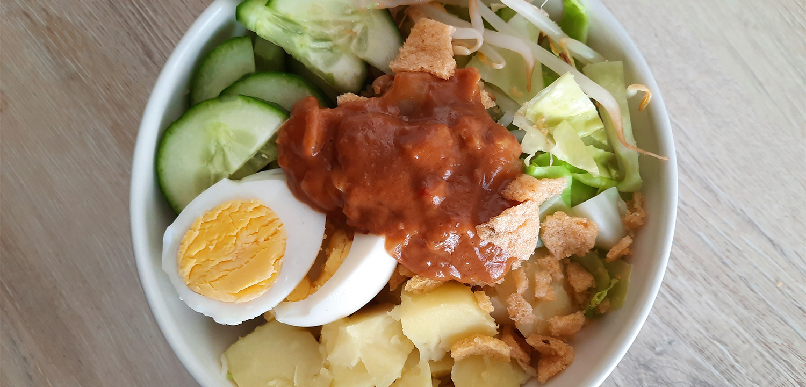

ananas beignets

koreaanse bibimbap

amerikaanse caesar salade

biefstuk chimichurri & gegrilde groenten

bami met spinazie

italiaanse caponata

enge aardappels
finse witte kool rolletjes
hutspot uit eigen land
kokossoep
sri lankaanse kottu
spitskoolsoep
salade met gegrilde ananas

chorizosoep

enchiladas

vietnamese filodeegloempia uit de airfryer
thaise noedels (pad thai)

indonesische kippensoep (soto ajam)
gado gado
Tip: in plaats van aardappel kun je ook rijst toevoegen!

Bereidingsduur: 45 minuten
Aantal personen: 2
Ingrediënten:
2 stuks eieren
1 ui
1 teentje knoflook
0,5 eetlepel ketjap
0,5 theelepel sambal
7 eetlepels pindasaus
500 gram aardappels
300 gram spitskool
2 handjes peterselie
125 gram taugé
3 eetlepels limoensap
2 handjes cassavekroepoek
naar smaak kokospoeder
2 stuks eieren
1 ui
1 teentje knoflook
0,5 eetlepel ketjap
0,5 theelepel sambal
7 eetlepels pindasaus
500 gram aardappels
300 gram spitskool
2 handjes peterselie
125 gram taugé
3 eetlepels limoensap
2 handjes cassavekroepoek
naar smaak kokospoeder
Instructies:
1. Kook de eieren en schil en kook en de aardappels tot ze net niet kruimig zijn.
2. Snijd de ui en knoflook fijn en de kool in reepjes. Fruit de ui en knoflook en voeg daarna de pindasaus, ketjap, sambal en limoensap toe. Zet het fornuis uit als dit warm is.
3. Blancheer de kool en de taugé. Pel de eieren en snijd in schijfjes of partjes. Snijd de aardappels in kleine blokjes en de komkommer in halve schijfjes.
4. Pak twee kommetjes en verdeel hierover de groenten. Leg hierop de eieren en giet de warme saus eroverheen. Verkruimel de kroepoek over de twee kommetjes en strooi de peterselie eroverheen. Voeg naar wens wat kokospoeder toe.
1. Kook de eieren en schil en kook en de aardappels tot ze net niet kruimig zijn.
2. Snijd de ui en knoflook fijn en de kool in reepjes. Fruit de ui en knoflook en voeg daarna de pindasaus, ketjap, sambal en limoensap toe. Zet het fornuis uit als dit warm is.
3. Blancheer de kool en de taugé. Pel de eieren en snijd in schijfjes of partjes. Snijd de aardappels in kleine blokjes en de komkommer in halve schijfjes.
4. Pak twee kommetjes en verdeel hierover de groenten. Leg hierop de eieren en giet de warme saus eroverheen. Verkruimel de kroepoek over de twee kommetjes en strooi de peterselie eroverheen. Voeg naar wens wat kokospoeder toe.